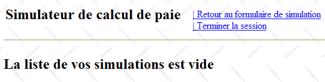
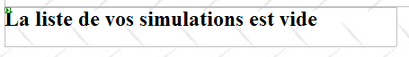
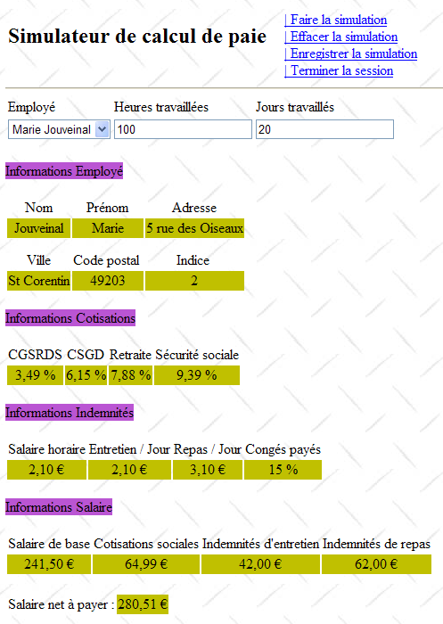
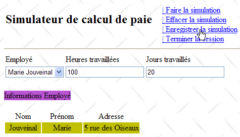
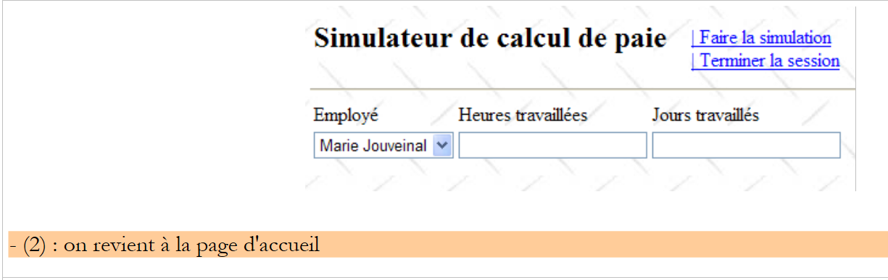

8. De [SimuPaie]-applicatie – versie 4 – ASP.NET / meerdere weergaven / één pagina
Aanbevolen lectuur: referentie [1], Ontwikkeling WEB met ASP.NET 1.1, paragrafen:
-
Servercomponenten en applicatiecontroller
-
Voorbeelden van MVC-toepassingen met ASP-servercomponenten
We bekijken nu een afgeleide versie van de eerder besproken drielaagse applicatie ASP.NET, waaraan nieuwe functionaliteiten zijn toegevoegd. De architectuur van onze applicatie ontwikkelt zich als volgt:
 |
De verwerking van een verzoek van een klant verloopt volgens de volgende stappen:
- de klant dient een verzoek in bij de applicatie.
- de applicatie verwerkt dit verzoek. Hiervoor kan de applicatie de hulp nodig hebben van de laag [métier], die op haar beurt de laag [dao] nodig kan hebben als er gegevens met de database moeten worden uitgewisseld. De applicatie ontvangt een antwoord van de laag [métier].
- Op basis daarvan kiest de applicatie (3) de weergave (= het antwoord) die naar de klant moet worden verzonden en voorziet deze (4) van de informatie (het model) die nodig is.
- Het antwoord wordt naar de klant verzonden (5)
We hebben hier te maken met een zogenaamde MVC-webarchitectuur (Model – View – Controller):
- [Application] is de controller. Deze verwerkt alle verzoeken van de klant.
- [Saisies, Simulation, Simulations, ...] zijn de weergaven. Een weergave in .NET bestaat uit standaardcode ASP / HTML die componenten bevat die moeten worden geïnitialiseerd. De waarden die aan deze componenten moeten worden doorgegeven, vormen het model van de weergave.
We gaan hier het ontwerppatroon (design pattern) MVC als volgt implementeren:
- de weergaven zijn componenten [View] binnen één enkele pagina [Default.aspx]
- de controller is dan de code [Default.aspx.cs] van deze enkele pagina.
Alleen eenvoudige applicaties kunnen deze implementatie MVC ondersteunen. Bij elk verzoek worden namelijk alle componenten van de pagina [Default.aspx] geïnstantieerd, dus ook alle weergaven. Op het moment dat het antwoord wordt verzonden, wordt er één ervan gekozen door de besturingscode van de applicatie, simpelweg door de bijbehorende component [View] zichtbaar te maken en de andere te verbergen. Als de applicatie veel weergaven heeft, zal de pagina [Default.aspx] veel componenten bevatten en kunnen de instantiatiekosten onbetaalbaar worden. Bovendien bestaat het risico dat de pagina [Design] onbeheersbaar wordt omdat er te veel weergaven zijn. Dit type architectuur is geschikt voor applicaties met weinig weergaven die door één persoon worden ontwikkeld. Wanneer deze architectuur kan worden toegepast, maakt ze het mogelijk om heel eenvoudig een MVC-architectuur te ontwikkelen. Dat gaan we in deze nieuwe versie bekijken.
8.1. De weergaven van de applicatie
De verschillende weergaven die aan de gebruiker worden getoond, zijn de volgende:
- de weergave [VueSaisies], die het simulatieformulier toont

- de weergave [VueSimulation] die wordt gebruikt om het gedetailleerde resultaat van de simulatie weer te geven:

- de weergave [VueSimulations], die de lijst met door de klant uitgevoerde simulaties weergeeft

- de weergave [VueSimulationsVides] die aangeeft dat de klant geen of geen simulaties meer heeft:

- de weergave [VueErreurs] die aangeeft dat er een of meerdere fouten zijn:

8.2. Het Visual Web Developer-project van de laag [web]
Het Visual Web Developer-project van de laag [web] ziet er als volgt uit:
 |
- in [1] vinden we:
- het configuratiebestand [Web.config] van de applicatie – is identiek aan dat van de vorige applicatie.
- het bestand [Global.cs] dat de gebeurtenissen van de webapplicatie beheert, in dit geval het opstarten ervan – is identiek aan dat van de vorige applicatie, behalve dat het ook het opstarten van de gebruikerssessie beheert.
- het formulier [Default.aspx] van de applicatie – bevat de verschillende weergaven van de applicatie.
- In [2] staan de projectreferenties – deze zijn identiek aan die van de vorige versie
8.3. Het bestand [Global.cs]
Het bestand [Global.cs], dat de gebeurtenissen van de webapplicatie beheert, is identiek aan dat van de vorige applicatie, behalve dat het bovendien het opstarten van de gebruikerssessie beheert:
Global.cs
using System;
using System.Web;
using Pam.Dao.Entites;
using Pam.Metier.Service;
using Spring.Context.Support;
using System.Collections.Generic;
using istia.st.pam.web;
namespace pam_v4
{
public class Global : HttpApplication
{
// --- statische gegevens van de applicatie ---
public static Employe[] Employes;
public static string Msg = string.Empty;
public static bool Erreur = false;
public static IPamMetier PamMetier = null;
// de applicatie wordt gestart
public void Application_Start(object sender, EventArgs e)
{
...
}
// opstarten van een gebruikerssessie
public void Session_Start(object sender, EventArgs e)
{
// er wordt een lege lijst met simulaties in de sessie geplaatst
Session["simulations"] = new List<Simulation>();
}
}
}
- regels 27-34: hier wordt het starten van de sessie afgehandeld. Hierin zullen we de lijst met door de gebruiker uitgevoerde simulaties opnemen.
- regel 30: er wordt een lege lijst met simulaties aangemaakt. Een simulatie is een object van het type [Simulation], dat we straks nader zullen toelichten.
- regel 31: de lijst met simulaties wordt geplaatst in de sessie die gekoppeld is aan de sleutel "simulaties"
8.4. De klasse [Simulation]
Een object van het type [Simulation] wordt gebruikt om een rij uit de simulatietabel in te kapselen:
De code ervan is als volgt:
namespace Pam.Web
{
public class Simulation
{
// gegevens van een simulatie
public string Nom { get; set; }
public string Prenom { get; set; }
public double HeuresTravaillees { get; set; }
public int JoursTravailles { get; set; }
public double SalaireBase { get; set; }
public double Indemnites { get; set; }
public double CotisationsSociales { get; set; }
public double SalaireNet { get; set; }
// constructors
public Simulation()
{
}
public Simulation(string nom, string prenom, double heuresTravailllees, int joursTravailles, double salaireBase, double indemnites, double cotisationsSociales, double salaireNet)
{
{
this.Nom = nom;
this.Prenom = prenom;
this.HeuresTravaillees = heuresTravailllees;
this.JoursTravailles = joursTravailles;
this.SalaireBase = salaireBase;
this.Indemnites = indemnites;
this.CotisationsSociales = cotisationsSociales;
this.SalaireNet = salaireNet;
}
}
}
}
De velden van de klasse komen overeen met de kolommen van de simulatietabel.
8.5. De pagina [Default.aspx]
8.5.1. Overzicht
De pagina [Default.aspx] bevat meerdere componenten [View], één voor elke weergave. De basisstructuur is als volgt:
<%@ Page Language="C#" AutoEventWireup="true" CodeFile="Default.aspx.cs" Inherits="pam_v4.PagePam" %>
<!DOCTYPE html PUBLIC "-//W3C//DTD XHTML 1.0 Transitional//EN" "http://www.w3.org/TR/xhtml1/DTD/xhtml1-transitional.dtd">
<html xmlns="http://www.w3.org/1999/xhtml">
<head id="Head1" runat="server">
<title>Simulateur de paie</title>
</head>
<body background="ressources/standard.jpg">
<form id="form1" runat="server">
<asp:ScriptManager ID="ScriptManager1" runat="server" EnablePartialRendering="true" />
<asp:UpdatePanel runat="server" ID="UpdatePanelPam" UpdateMode="Conditional">
<ContentTemplate>
<table>
<tr>
<td>
<h2>
Simulateur de calcul de paie</h2>
</td>
<td>
<label>
 </label>
<asp:UpdateProgress ID="UpdateProgress1" runat="server">
<ProgressTemplate>
<img src="images/indicator.gif" />
<asp:Label ID="Label5" runat="server" BackColor="#FF8000"
EnableViewState="False" Text="Calcul en cours. Patientez ....">
</asp:Label>
</ProgressTemplate>
</asp:UpdateProgress>
</td>
<td>
<asp:LinkButton ID="LinkButtonFaireSimulation" runat="server"
CausesValidation="False" OnClick="LinkButtonFaireSimulation_Click">
| Faire la simulation<br /></asp:LinkButton>
<asp:LinkButton ID="LinkButtonEffacerSimulation" runat="server"
CausesValidation="False" OnClick="LinkButtonEffacerSimulation_Click">
| Effacer la simulation<br /></asp:LinkButton>
<asp:LinkButton ID="LinkButtonVoirSimulations" runat="server"
CausesValidation="False" OnClick="LinkButtonVoirSimulations_Click">
| Voir les simulations<br /></asp:LinkButton>
<asp:LinkButton ID="LinkButtonFormulaireSimulation" runat="server"
CausesValidation="False" OnClick="LinkButtonFormulaireSimulation_Click">
| Retour au formulaire de simulation<br /></asp:LinkButton>
<asp:LinkButton ID="LinkButtonEnregistrerSimulation" runat="server"
CausesValidation="False" OnClick="LinkButtonEnregistrerSimulation_Click">
| Enregistrer la simulation<br /></asp:LinkButton>
<asp:LinkButton ID="LinkButtonTerminerSession" runat="server"
CausesValidation="False" OnClick="LinkButtonTerminerSession_Click">
| Terminer la session<br /></asp:LinkButton>
</td>
</table>
<hr />
<asp:MultiView ID="Vues1" ActiveViewIndex="0" runat="server">
<asp:View ID="VueSaisies" runat="server">
...
</asp:View>
</asp:MultiView>
<asp:MultiView ID="Vues2" runat="server">
<asp:View ID="VueSimulation" runat="server">
...
</asp:View>
<asp:View ID="VueSimulations" runat="server">
...
</asp:View>
<asp:View ID="VueSimulationsVides" runat="server">
...
</asp:View>
<asp:View ID="VueErreurs" runat="server">
...
</asp:View>
</asp:MultiView>
</ContentTemplate>
</asp:UpdatePanel>
</form>
</body>
</html>
- regel 10: de tag voor het plaatsen van de Ajax-uitbreidingen
- regels 11-73: de container UpdatePanel die via Ajax-aanroepen wordt bijgewerkt
- regels 12-72: de inhoud van de container UpdatePanel
- regels 13-52: de koptekst die in elke weergave aanwezig zal zijn. Deze toont de gebruiker de lijst met mogelijke acties in de vorm van een lijst met links.
- regel 33: let op het attribuut CausesValidation="False", waardoor de validaties van de pagina niet impliciet worden uitgevoerd wanneer op de link wordt geklikt. Wanneer dit attribuut ontbreekt, is de standaardwaarde True. De validatie van de pagina kan expliciet worden uitgevoerd in de server-side code via de bewerking Page.Validate.
- regels 53-57: een component [MultiView] met één enkele weergave [VueSaisies]. Om deze reden is in regel 53 het nummer van de weer te geven weergave hard gecodeerd: ActiveViewIndex="0"
- regels 53-67: een component [MultiView] met vier weergaven: de weergave [VueSimulation] in regels 59-61, de weergave [VueSimulations] op de regels 62-64, de weergave [VueSimulationsVides] op de regels 65-67, de weergave [VueErreurs] op de regels 68-70. Een component [MultiView] geeft slechts één weergave tegelijk weer. Om weergave nr. i van de component Vues2 weer te geven, schrijft men de volgende code:
8.5.2. De en kop
De koptekst bestaat uit de volgende componenten:
 |
Nr. | Type | Naam | Rol |
LinkButton | LinkButtonFaireSimulation | vraag de simulatie te berekenen | |
LinkButton | LinkButtonEffacerSimulation | wist het invoerformulier | |
LinkButton | LinkButtonVoirSimulations | toont de lijst met reeds uitgevoerde simulaties | |
LinkButton | LinkButtonFormulaireSimulation | gaat terug naar het invoerformulier | |
LinkButton | LinkButtonEnregistrerSimulation | slaat de huidige simulatie op in de lijst met simulaties | |
LinkButton | LinkButtonTerminerSession | beëindigt de huidige sessie |
8.5.3. De weergave [Saisies]
De component [View] met de naam [VueSaisies] is als volgt:
 |
Nr. | Type | Naam | Rol |
DropDownList | ComboBoxEmployes | Bevat de lijst met namen van de werknemers | |
TextBox | TextBoxHeures | Aantal gewerkte uren – werkelijk aantal | |
TextBox | TextBoxJours | Aantal gewerkte dagen – geheel getal | |
RequiredFieldValidator | RequiredFieldValidatorHeures | controleert of het veld [2] [TextBoxHeures] niet leeg is | |
RegularExpressionValidator | RegularExpressionValidatorHeures | controleert of het veld [2] [TextBoxHeures] een reëel getal is >=0 | |
RequiredFieldValidator | RequiredFieldValidatorJours | controleert of het veld [3] [TextBoxJours] niet leeg is | |
RegularExpressionValidator | RegularExpressionValidatorJours | controleert of het veld [3] [TextBoxJours] een geheel getal >=0 is |
8.5.4. De weergave [Simulation]
De component [View] met de naam [VueSimulation] is als volgt:

Het bestaat uitsluitend uit componenten [Label], waarvan de ID hierboven zijn vermeld.
8.5.5. De weergave [Simulations]
De component [View] met de naam [VueSimulations] is als volgt:
 |
Nr. | Type | Naam | Rol |
GridView | GridViewSimulations | Bevat de lijst met simulaties |
De eigenschappen van de component [GridViewSimulations] zijn als volgt gedefinieerd:
 |
- in [1]: klik met de rechtermuisknop op [GridView] / optie [Mise en forme automatique]
- naar [2]: kies een weergavetype voor [GridView]
 |
- in [3]: selecteer de eigenschappen van [GridView]
- in [4]: de kolommen van [GridView] bewerken
- in [5]: voeg een kolom van het type [BoundField] toe die gekoppeld (bound) zal zijn aan een van de openbare eigenschappen van het object dat in de rij van [GridView] moet worden weergegeven. Het object dat hier wordt weergegeven, is een object van het type [Simulation].
 |
- in [6]: geef de titel van de kolom op
- in [7]: geef de naam op van de eigenschap van de klasse [Simulation] die aan deze kolom wordt gekoppeld.
- [DataFormatString] geeft aan hoe de waarden in de kolom moeten worden opgemaakt.
De kolommen van de component [GridViewSimulations] hebben de volgende eigenschappen:
Nr. | Eigenschappen |
Type: BoundField, HeaderText: Naam, DataField: Naam | |
Type: BoundField, HeaderText: Achternaam, DataField: Voornaam | |
Type: BoundField, HeaderText: Gewerkte uren, DataField: HeuresTravaillees | |
Type: BoundField, HeaderText: Gewerkte dagen, DataField: JoursTravailles | |
Type: BoundField, HeaderText: Basissalaris, DataField: SalaireBase, DataFormatString: {0:C} (geldformaat, C=Currency) – geeft het symbool van de euro weer. | |
Type: BoundField, HeaderText: Toeslagen, Gegevensveld: Toeslagen, DataFormatString: {0:C} | |
Type: BoundField, HeaderText: Sociale premies, DataField: CotisationsSociales, DataFormatString: {0:C} | |
Type: BoundField, HeaderText: Nettoloon, DataField: SalaireNet, DataFormatString: {0:C} |
Er moet op worden gelet dat het veld [DataField] moet overeenkomen met een bestaande eigenschap van de klasse [Simulation]. Aan het einde van deze fase zijn alle kolommen van het type [BoundField] aangemaakt:
 |
- in [1]: de kolommen die zijn aangemaakt voor [GridView]
- in [2]: het automatisch genereren van kolommen moet worden uitgeschakeld wanneer de ontwikkelaar ze zelf definieert, zoals we zojuist hebben gedaan.
Nu moeten we nog de kolom met links [Retirer] aanmaken:

 |
- in [1]: voeg een kolom van het type [CommandField / Supprimer]
- in [2]: ButtonType=Link om een link in de kolom te hebben in plaats van een knop
- in [3]: CausesValidation=False, een klik op de link zal niet leiden tot het uitvoeren van de validatiecontroles die op de pagina kunnen staan. Het verwijderen van een simulatie vereist namelijk geen gegevenscontrole.
- in [4]: alleen de verwijderlink is zichtbaar.
- in [5]: de tekst van deze link
8.5.6. De weergave [SimulationsVides]
De component [View] met de naam [VueSimulationsVides] bevat alleen tekst:
 |
8.5.7. De weergave [Erreurs]
De component [View] met de naam [VueErreurs] ziet er als volgt uit:
 |
Nr. | Type | Naam | Functie |
Repeater | RptErreurs | geeft een lijst met foutmeldingen weer |
Met de component [Repeater] kunt u een code ASP.NET / HTML herhalen voor elk object van een gegevensbron, meestal een verzameling. Deze code wordt rechtstreeks gedefinieerd in de broncode ASP.NET van de pagina:
<asp:Repeater ID="RptErreurs" runat="server">
<ItemTemplate>
<li>
<%# Container.DataItem %>
</li>
</ItemTemplate>
</asp:Repeater>
- regel 2: <ItemTemplate> definieert de code die voor elk element van de gegevensbron wordt herhaald.
- regel 4: geeft de waarde weer van de uitdrukking Container.DataItem, die het huidige element van de gegevensbron aanduidt. Aangezien dit element een object is, wordt de methode ToString van dit object gebruikt om het op te nemen in de HTML-stroom van de pagina. Onze verzameling objecten zal een List(Of String)-verzameling zijn die foutmeldingen bevat. De regels 3-5 voegen <li>Message</li>-sequenties toe aan de HTML-stroom van de pagina.
8.6. De controller [Default.aspx.cs]
8.6.1. Overzicht
Laten we terugkeren naar de MVC-architectuur van de applicatie:
 |
- [Default.aspx.cs], de besturingscode van de afzonderlijke pagina, is de controller van de applicatie.
- [Global] is het object van het type [HttpApplication] dat de applicatie initialiseert en dat een verwijzing heeft naar de laag [métier].
Het basisschema van de code van de controller [Default.aspx.cs] is als volgt:
using System.Collections.Generic;
...
public partial class PagePam : Page
{
private void setVues(bool boolVues1, bool boolVues2, int index)
{
// de gevraagde weergaven worden weergegeven
// boolVues1: true als de multiview ‘Vues1’ zichtbaar moet zijn
// boolVues1: true als de multiview 'Vues2' zichtbaar moet zijn
// index: index van de weer te geven weergave van Vues2
...
}
private void setMenu(bool boolFaireSimulation, bool boolEnregistrerSimulation, bool boolEffacerSimulation, bool boolFormulaireSimulation, bool boolVoirSimulations, bool boolTerminerSession)
{
// hier worden de menuopties ingesteld
// elke booleaanse waarde wordt toegewezen aan de eigenschap Visible van de bijbehorende link
...
}
// de pagina wordt geladen
protected void Page_Load(object sender, System.EventArgs e)
{
// verwerking van de eerste aanvraag
if (!IsPostBack)
{
...
}
}
protected void LinkButtonFaireSimulation_Click(object sender, System.EventArgs e)
{
...
}
protected void LinkButtonEffacerSimulation_Click(object sender, System.EventArgs e)
{
....
}
protected void LinkButtonVoirSimulations_Click(object sender, System.EventArgs e)
{
...
}
protected void LinkButtonEnregistrerSimulation_Click(object sender, System.EventArgs e)
{
...
}
protected void LinkButtonTerminerSession_Click(object sender, System.EventArgs e)
{
...
}
protected void LinkButtonFormulaireSimulation_Click(object sender, System.EventArgs e)
{
...
}
protected void GridViewSimulations_RowDeleting(object sender, GridViewDeleteEventArgs e)
{
...
}
}
Bij de eerste aanvraag (GET) van de gebruiker wordt alleen de gebeurtenis Load in de regels 24-31 verwerkt. Bij de volgende aanvragen (POST) via de menulinks worden twee gebeurtenissen verwerkt:
- de gebeurtenis Load (24-31), maar door de booleaanse test Page.IsPostback (regel 27) gebeurt er niets.
- de gebeurtenis die gekoppeld is aan de link waarop is geklikt:
 |
- regels 33-36: verwerken de klik op de link [1]
- regels 38-41: verwerken de klik op de link [2]
- regels 43-46: verwerken de klik op de link [3]
- regels 58-61: verwerken de klik op de link [4]
- regels 48-51: verwerken de klik op de link [5]
- regels 53-56: verwerken de klik op de link [6]
Om veelvoorkomende codereeksen te hergebruiken, zijn er twee interne methoden gemaakt:
- setVues, regels 7-14: bepaalt welke weergave(n) moeten worden weergegeven
- setMenu, regels 16-21: bepaalt welke menuopties moeten worden weergegeven
8.6.2. De gebeurtenis Load
Aanbevolen lectuur: referentie [1], Ontwikkeling WEB met ASP.NET 1.1:
- paragraaf Component [Repeater] en gegevenskoppeling.
Het eerste scherm dat aan de gebruiker wordt getoond, is dat van het lege formulier:

Voor het opstarten van de applicatie is toegang tot een gegevensbron vereist; dit kan mislukken. In dat geval is de eerste pagina een foutpagina:

De gebeurtenis [Load] wordt op dezelfde manier verwerkt als de eerdere versies ASP.NET:
// de pagina wordt geladen
protected void Page_Load(object sender, System.EventArgs e)
{
// verwerking van het eerste verzoek
if (!IsPostBack)
{
// initialisatiefouten?
if (Global.Erreur)
{
// weergave van de weergave [erreurs]
...
// menu positioneren
...
return;
}
// laden van de namen van de medewerkers in de keuzelijst
...
// menu-positionering
...
// weergave van de weergave [saisie]
...
}
}
Vraag: vul de bovenstaande code aan
8.6.3. Actie: Voer de simulatie uit
Hieronder is het scherm met nummer (1) het verzoek van de gebruiker, het scherm met nummer (2) het antwoord dat de webapplicatie naar de gebruiker stuurt. Vanaf het startscherm kan de gebruiker een simulatie starten:


 |
De procedure die deze actie verwerkt, zou er als volgt uit kunnen zien:
protected void LinkButtonFaireSimulation_Click(object sender, System.EventArgs e)
{
// berekening van het salaris
// pagina geldig?
Page.Validate();
if (!Page.IsValid)
{
// weergave [saisie]
...
return;
}
// de pagina is geldig – de invoer wordt opgehaald
double HeuresTravaillées = ...;
int JoursTravaillés = ...;
// het salaris van de werknemer wordt berekend
FeuilleSalaire feuillesalaire;
try
{
feuillesalaire = ...
}
catch (PamException ex)
{
// weergave van de weergave [erreurs]
...
return;
}
// het resultaat wordt in de sessie opgeslagen
Session["simulation"] = ...
// weergave van de resultaten
...
// weergave van weergaven [saisie, employe, salaire]
...
// menu weergeven
...
}
Vraag: vul de bovenstaande code aan
8.6.4. Actie: De simulatie opslaan
Zodra de simulatie is voltooid, kan de gebruiker vragen om deze op te slaan:
 |

De procedure die deze actie verwerkt, zou er als volgt uit kunnen zien:
protected void LinkButtonEnregistrerSimulation_Click(object sender, System.EventArgs e)
{
// de huidige simulatie wordt opgeslagen in de lijst met simulaties van de sessie
...
// de weergave [simulations] wordt weergegeven
...
}
Vraag: vul de bovenstaande code aan
8.6.5. Actie: Terug naar het simulatieformulier
Aanbevolen lectuur: referentie [1], [Développement WEB avec ASP.NET 1.1 ]: de rol van het verborgen veld _VIEWSTATE
Zodra de lijst met simulaties wordt weergegeven, kan de gebruiker vragen om terug te keren naar het simulatieformulier:
 |
Merk op dat scherm (2) het formulier weergeeft zoals het is ingevuld. Houd er rekening mee dat deze verschillende weergaven deel uitmaken van dezelfde pagina. Tussen de verschillende verzoeken worden de waarden van de componenten behouden door het mechanisme van ViewState, mits deze componenten de eigenschap EnableViewState tot true hebben.
De procedure die deze actie verwerkt, zou er als volgt uit kunnen zien:
protected void LinkButtonFormulaireSimulation_Click(object sender, System.EventArgs e)
{
// weergave van de weergave [saisie]
...
// menu-positionering
...
}
Vraag: vul de bovenstaande code aan
8.6.6. Actie: De simulatie wissen
Zodra de gebruiker terug is bij het simulatieformulier, kan hij vragen om de huidige invoer te wissen:
 |
De procedure die deze actie verwerkt, zou er als volgt uit kunnen zien:
protected void LinkButtonEffacerSimulation_Click(object sender, System.EventArgs e)
{
// RAZ van het formulier
...
}
Vraag: vul de bovenstaande code aan
8.6.7. Actie: Simulaties bekijken
De gebruiker kan vragen om de simulaties te bekijken die hij al heeft uitgevoerd:
 |
 |
De procedure die deze actie verwerkt, zou er als volgt uit kunnen zien:
protected void LinkButtonVoirSimulations_Click(object sender, System.EventArgs e)
{
// de simulaties worden opgehaald uit de sessie
...
// zijn er simulaties?
if (...)
{
// weergave [simulations] zichtbaar
...
}
else
{
// weergave [SimulationsVides]
...
}
// het menu wordt vastgezet
...
}
Vraag: vul de bovenstaande code aan
8.6.8. Actie: Een simulatie verwijderen
De gebruiker kan vragen om een simulatie te verwijderen:
 |
 |
De procedure [GridViewSimulations_RowDeleting ] die deze actie verwerkt, zou er als volgt uit kunnen zien:
protected void GridViewSimulations_RowDeleting(object sender, GridViewDeleteEventArgs e)
{
// de simulaties worden opgehaald in de sessie
...
// de aangewezen simulatie verwijderen (e.RowIndex is het nummer van de verwijderde regel)
...
// zijn er nog simulaties over?
if (...)
{
// het veld GridView wordt ingevuld
...
}
else
{
// weergave [SimulationsVides]
...
}
}
Vraag: vul de bovenstaande code aan
8.6.9. Actie: De sessie beëindigen
De gebruiker kan vragen om zijn simulatiesessie te beëindigen. Hierdoor wordt de inhoud van zijn sessie gewist en wordt een leeg formulier weergegeven:
 |
 |
De procedure die deze actie verwerkt, zou er als volgt uit kunnen zien:
protected void LinkButtonTerminerSession_Click(object sender, System.EventArgs e)
{
// de sessie wordt beëindigd
...
// weergave [saisies] weergeven
...
// menu positioneren
...
}
Vraag: vul de bovenstaande code aan
Praktijkoefening: implementeer de vorige webapplicatie op een computer. Voeg er Ajax-functionaliteit aan toe.